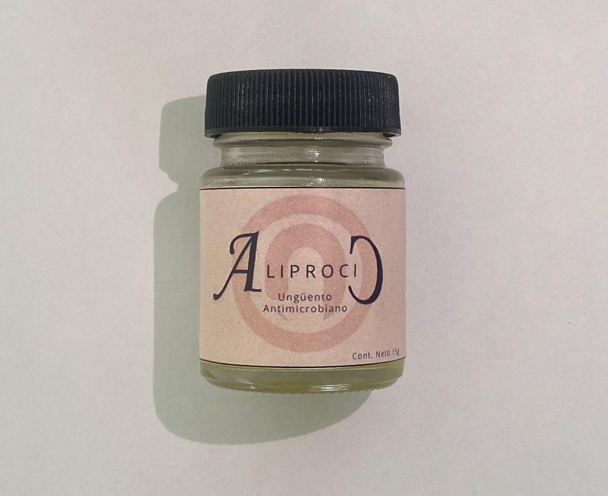
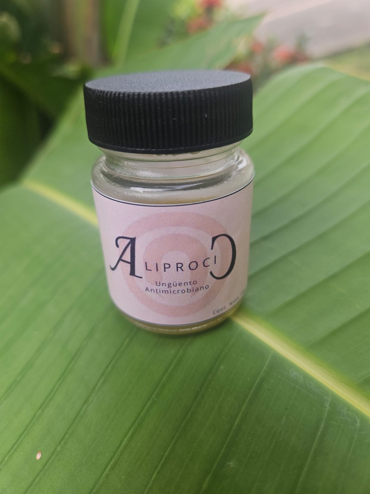
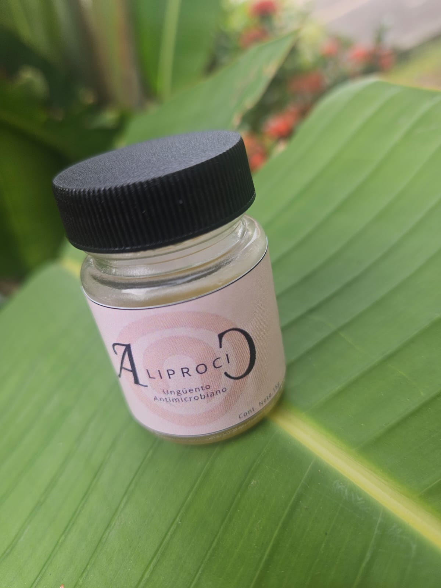

Aliprocic: Ungüento de Coco
Precio: $65.00 MXN
Ungüento natural elaborado de maceración de aceite de coco y té de manzanilla, contiene ácido láurico, que tiene propiedades antimicrobianas que protege contra infecciones.